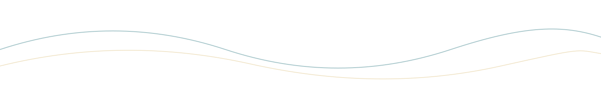
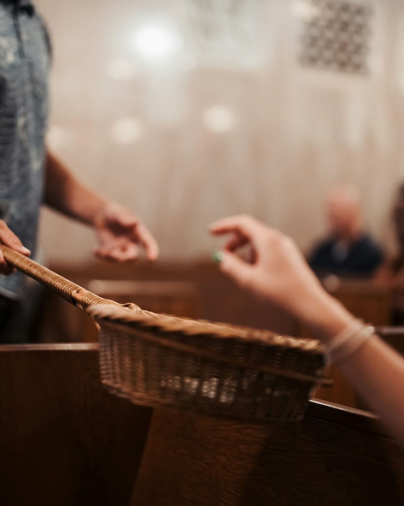
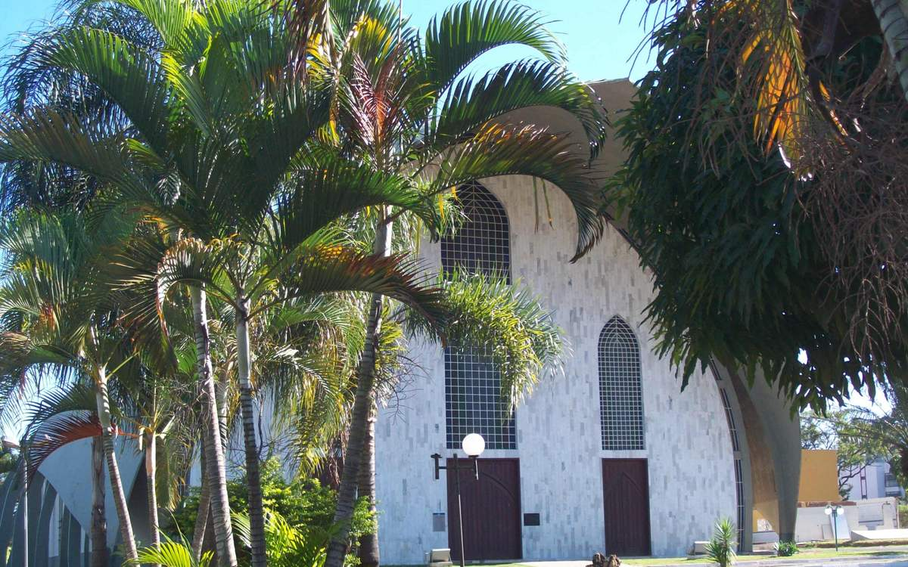

Corpo Diaconal · Assembleia de Deus Catedral Baleia
Servir com alegria, acolher com amor
Somos os diáconos da Catedral Baleia. Recebemos quem chega, cuidamos da ordem do culto e estendemos a mão a quem precisa de oração, visita ou apoio.
"Porque o Filho do Homem também não veio para ser servido, mas para servir e dar a sua vida em resgate de muitos."


Quem somos
Um corpo que serve, para a igreja servir melhor
O Corpo Diaconal reúne irmãos chamados a servir na Assembleia de Deus Catedral Baleia, igreja do Ministério de Madureira (CONAMAD), na Asa Sul. Trabalhamos lado a lado com o ministério pastoral, sob a orientação do pastor presidente, Pr. João Adair Ferreira a confirmar.
Nosso serviço começa na porta e vai além dos cultos: acolhemos visitantes, zelamos pela reverência na casa de Deus, ajudamos nas ordenanças e levamos cuidado a famílias e enfermos.
Como em Atos 6, servimos para que a Palavra siga em primeiro lugar e ninguém fique esquecido.
Nossos valores
- Serviço: servir com alegria, sem buscar reconhecimento.
- Ordem: tudo com decência, para que o culto flua em paz.
- Unidade: um só corpo, cuidando uns dos outros.
Base bíblica
O diaconato nasce do cuidado
Desde a igreja primitiva, o serviço aos irmãos caminha junto com a oração e a Palavra.
"Escolhei, pois, irmãos, dentre vós, sete varões de boa reputação, cheios do Espírito Santo e de sabedoria, aos quais constituamos sobre este importante negócio."
-
Atos 6.1-7
A origem do serviço
A igreja crescia e algumas viúvas ficavam sem assistência. Sete servos foram escolhidos, e "crescia a palavra de Deus".
-
1 Timóteo 3.8-13
O caráter do diácono
Honestidade, palavra firme, fé guardada em consciência pura e a casa em ordem: o serviço começa pela vida.
-
Filipenses 1.1
Parte da igreja local
Paulo saúda a igreja de Filipos "com os bispos e diáconos": um serviço reconhecido no corpo de Cristo.
O que fazemos
Onde a diaconia serve
Do primeiro "seja bem-vindo" ao cuidado fora do templo, cada área existe para servir pessoas.
-
Recepção e acolhimento
Recebemos você na porta, ajudamos a encontrar um lugar e orientamos quem visita a igreja pela primeira vez.
-
Ordem e reverência nos cultos
Zelamos para que o culto aconteça em paz, com respeito, silêncio e atenção a quem precisa de ajuda.
-
Santa Ceia
Preparamos e servimos os elementos com reverência, em apoio ao ministério pastoral.
-
Apoio ao batismo
Auxiliamos na organização e no cuidado com os batizandos, para que o momento seja vivido com tranquilidade.
-
Ação social e cestas
Apoiamos famílias em necessidade com cestas básicas e encaminhamentos, conforme as possibilidades da igreja.
-
Visitas a enfermos e famílias
Levamos oração, uma palavra de ânimo e presença a quem está doente, enlutado ou passando por dificuldades.
-
Apoio a eventos
Servimos em congressos, festividades e eventos especiais, cuidando da recepção, da organização e do bem-estar de todos.
-
Sente o chamado para servir?
Há lugar para você neste ministério.
Quero servir
Áreas em que a diaconia costuma servir; a atuação pode variar conforme a programação da igreja. a confirmar
Liderança
Quem coordena o serviço
A coordenação organiza as escalas, acompanha os diáconos e responde pela diaconia junto ao ministério pastoral.
-
[Nome do coordenador da diaconia]
Coordenação da diaconia a confirmar
-
[Nome do vice-coordenador]
Vice-coordenação a confirmar
-
[Nome do secretário da diaconia]
Secretaria da diaconia a confirmar
Nomes e fotos serão publicados com autorização da liderança.
Agenda
Horários e escala a confirmar
Horários sujeitos a alteração. Confirme com a secretaria da igreja.
Cultos
| Culto | Dia | Horário |
|---|---|---|
| Culto da manhã | Domingo | 10h às 13h |
| Culto da noite | Domingo | 18h às 20h30 |
| Culto de ensino | consulte o dia na secretaria | 19h30 |
| Santa Ceia | consulte a data na secretaria |
Diaconia
As reuniões e a escala do Corpo Diaconal são combinadas com a liderança. Consulte a liderança da diaconia ou a secretaria da igreja.
Servir
Quer servir conosco?
O diaconato é um chamado ao serviço humilde. Se você deseja cuidar da casa de Deus e das pessoas, converse com a gente.
"Cada um administre aos outros o dom como o recebeu, como bons despenseiros da multiforme graça de Deus."
O que a Palavra pede de quem serve
Inspirado em 1 Timóteo 3.8-13
- Vida de fé e bom testemunho, dentro e fora da igreja.
- Palavra honesta e firme, sem duplicidade.
- Domínio próprio e desapego do dinheiro.
- Fé guardada em consciência pura.
- Família e casa cuidadas com amor e ordem.
- Disposição para ser acompanhado antes de assumir o serviço.
Os critérios de ingresso são definidos pelo ministério pastoral da igreja.
Como dar o primeiro passo a confirmar
-
Converse com a coordenação
Conte seu desejo de servir pelo WhatsApp ou após um culto.
-
Conversa com o pastor
Um momento de diálogo e oração sobre o chamado.
-
Período de acompanhamento
Você serve junto com diáconos experientes e aprende na prática.
-
Apresentação à igreja
No tempo da liderança, o novo diácono é apresentado à igreja.
Ajuda
Precisa de ajuda?
Você não está sozinho. Conte o que está acontecendo e a diaconia vai orar com você, visitar sua família ou ver como apoiar.
"Levai as cargas uns dos outros e assim cumprireis a lei de Cristo."
Perguntas frequentes
Dúvidas comuns
O que faz um diácono?
O diácono serve a igreja de forma prática: acolhe pessoas, ajuda na ordem dos cultos, na Santa Ceia e no batismo, e leva cuidado a quem precisa, sempre em apoio ao ministério pastoral.
Preciso ser membro para ser atendido pela diaconia?
Não para ser acolhido. Visitantes são bem-vindos e podem pedir oração ou orientação. Pedidos de visita e apoio social são avaliados com cuidado pela diaconia e pela liderança.
Como peço uma visita ou oração?
Use o formulário "Precisa de ajuda?" nesta página ou chame a secretaria no WhatsApp (abre o WhatsApp em nova aba). Você também pode procurar um diácono antes ou depois do culto.
A igreja ajuda com cestas básicas?
A diaconia apoia famílias em necessidade conforme as possibilidades da igreja. Fale com a gente: cada pedido é ouvido com respeito e discrição.
Quem pode servir no diaconato?
Irmãos com vida de fé e bom testemunho, que desejam servir. A Bíblia descreve esse caráter em 1 Timóteo 3.8-13, e o ingresso é conduzido pelo ministério pastoral.
Meu pedido fica em sigilo?
Sim. Tratamos cada pedido com discrição. Este site não guarda seus dados: a mensagem vai direto para o WhatsApp, onde você revisa antes de enviar.
Como reconheço um diácono no culto?
Procure a equipe de recepção na entrada do templo. Se não encontrar, peça ajuda a qualquer obreiro: ele leva você até a diaconia.
Localização
Venha nos visitar
Estamos na Asa Sul, no templo em forma de baleia, com fachada de vidro e espelho d'água.
- Endereço
- Assembleia de Deus Catedral Baleia · SGAS 910, Asa Sul (via W5), Brasília/DF · CEP 70390-100 a confirmar
- Como reconhecer
- Templo em forma de baleia, com fachada de vidro e espelho d'água.
O atendimento é feito pela secretaria da igreja, que encaminha seu pedido à diaconia.
- WhatsApp da secretaria
- (61) 9905-5252 (abre o WhatsApp em nova aba) a confirmar
- Telefone
- (61) 3242-7119 a confirmar
- secretaria@
catedralbaleia.com.br a confirmar
Abrir no Google Maps (abre em nova aba) Localização aproximada, a confirmar
Estamos aqui para servir você
Seja para pedir oração, marcar uma visita ou começar a servir, o primeiro passo é uma conversa.
Fale com a diaconia pelo WhatsApp (abre o WhatsApp em nova aba)Atendimento pela secretaria da AD Catedral Baleia · número a confirmar